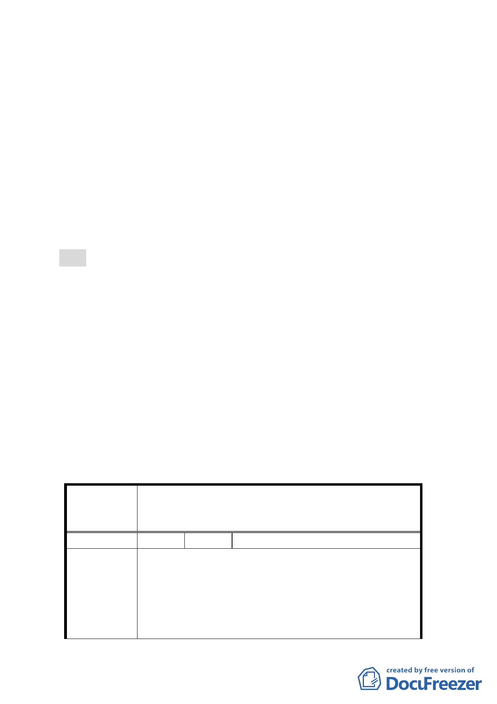

號公告「變更『修訂臺北市主要計畫商業區(通盤檢討)
計畫案』內有關商業區變更回饋相關規定案」之規定辦理。
（四） 事業及財務計畫：
以徵購、有償撥用、無償撥用等方式取得停車場兼廣場
用地，開闢經費由市府交通局編列預算執行。
四、本案係市府 99 年 4 月 15 日府都規字第 09931338803 號函送
到會。
五、公民或團體所提意見：計 4 件（詳後附綜理表）。
六、辦理單位：臺北市政府
七、法令依據：都市計畫法第 27 條第 1 項第 4 款。
決議：
一、本案依台銀表示願意配合市府改善交通環境政策，無償提供
土地供市府使用，全案依市府都市發展局所提修正後計畫書
及以下建議方案修正後通過：
（一）20 公尺寬庫倫街向南增加 5 公尺，拓寬為 25 公尺寬計畫道
路。
（二）商三（特）土地應整體開發，配合以都市設計規範。
（三）未來應配合地區整體交通規劃進行開闢。
二、公民或團體所提意見審決如後附綜理表。
臺北市都市計畫委員會公民或團體所提意見綜理表
變更臺北市大同區捷運圓山站西側庫倫街南側部分第
案 名 三種商業區（特）為停車場兼廣場用地暨修訂土地使用
管制細部計畫案
編 號 1 陳情人 臺灣銀行
貴府獲得國際授權首次舉辦 2010 臺北國際花卉博覽
會，向國際社會介紹臺灣、認識臺北，帶動花卉周邊產
陳情理由
業和城市發展，本行為配合此次活動曾於 98 年 9 月間
與 貴府協商獲得共識；暫緩標售庫倫街南面土地及無
償借予 貴府進行綠美化。嗣因地上佔用戶清理等問題
未續行辦理，本行隨即招商清理美化環境。本行所有庫
-3-